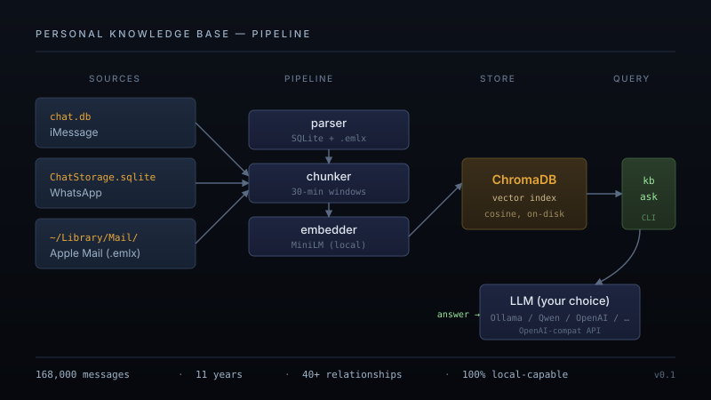

A queryable RAG over 11 years of my own messages, then a written portrait distilled from the data.

Two systems, on top of the same data.
The first is a small Python tool that reads my local Apple data — ~/Library/Messages/chat.db for iMessage, ChatStorage.sqlite for WhatsApp, ~/Library/Mail/ for email — chunks the conversations sensibly, embeds everything into a local vector database, and lets me ask natural-language questions about my own message history. Plain English in, dated and cited answers out.
The second is what came after. I took the same corpus and used an LLM to do something different — not retrieve it but distill it. The output is an Obsidian vault with about a hundred markdown files: who I am, who matters to me, how my voice has changed, what I've consistently said vs. what I tell people I believe. A written portrait built from 11 years of unguarded text.
The Karpathy frame. Andrej Karpathy described it well: there's a gap between the version of yourself you describe to people and the version that comes through across years of low-stakes communication. The first version is curated. The second one is data. I wanted to see the second one.
Two reasons, one practical, one deeper.
The practical one: my message history is the most concentrated record of my actual life that exists. Conversations with family and friends going back to college, every job decision I talked through, every relationship as it unfolded, every business idea I floated and discarded. None of it indexed. None of it searchable. It just sits in Apple's databases on my machine, growing every day, completely opaque to me. That bothered me. It's my data and I couldn't do anything with it.
The deeper one: I wanted to see who I actually am, not who I describe myself as. I think most people would be surprised by what 11 years of their own text reveals — patterns in how they talk, who they reach out to when, what they consistently care about, what they've quietly outgrown. I built the second system because the first one wasn't enough. Search lets you look up a fact. Distillation lets you see a shape.
The pipeline is small but each step has a real engineering decision behind it.
iMessage stores everything in a SQLite database at ~/Library/Messages/chat.db. The schema isn't documented and has some quirks worth knowing about: timestamps live in Apple's epoch (seconds since 2001-01-01) or nanoseconds-since-2001 depending on iOS version, so the parser sniffs the magnitude and converts. Reactions ("tapbacks") are stored as separate messages with associated_message_type in the 2000–3005 range — those get filtered out because they pollute search. Group chats vs. DMs are distinguished by style=43 vs 45. Sender attribution requires joining through chat_message_join, not the simpler handle_id, because outgoing messages have no handle. WhatsApp uses a similar SQLite store. Apple Mail is `.emlx` files in a deep folder hierarchy.
Naive chunking by message would lose context — a single text rarely makes sense alone. Instead the chunker groups messages into 30-minute activity windows: anything within half an hour of the previous message is the same conversation. If a window goes too long, it splits at token boundaries. Email threads get chunked per-message, with long messages split on paragraph breaks.
Everything goes into ChromaDB using the default all-MiniLM-L6-v2 embedder. That model runs on CPU, locally, no API key — important for the privacy story. Chunk IDs are content-hashed so re-ingesting later is idempotent. Query time: cosine similarity, top-N retrieval, optional filters by source or person.
The retrieved chunks get sent as context to an LLM that generates the answer. The tool speaks the OpenAI chat-completions API, which has become the de-facto standard — so the same code works against OpenAI, Anthropic, OpenRouter, or any local model server (Ollama, LM Studio, vLLM). The default config points at a local Ollama running Qwen 2.5, which means the entire pipeline can run with zero data leaving the machine.
Building the written portrait is a separate workflow. The retrieval system answers narrow questions ("what did I say about X"), but distilling 11 years of conversation into structured prose required a different shape — many passes, with verification. I built the vault iteratively: extract a topic, audit the extraction by querying the raw SQL ground truth, fix attribution errors (it's easy to misattribute lines in group chats), repeat. Four rounds of audits in total. The audit work is most of the project; the writing is the easy part.
Nothing about my actual data is on this page. No excerpts, no names from the vault, no message content. The corpus and the distilled vault stay on my machine, encrypted, never synced. The page describes the system, not the contents — and the open-source code on GitHub ships with no data either. If you want a knowledge base of your messages, you build your own. That's the whole point.